Master the complete art of exporting production-grade graphics in Python: understand DPI, figure dimensions, vector vs. raster formats (PNG, JPEG, SVG, PDF), transparent backgrounds, tight bounding boxes, image loading with imread(), and reusable publication pipelines.
Imagine kariye: aapne Jupyter Notebook ya VS Code me ek kamaal ka multi-panel graph banaya jo screen par ekdum perfect dikh raha tha. Lekin jaise hi aapne us graph ko save karke apne college project report ya PowerPoint presentation slide me insert kiya — achanak text blurry ho gaya, right-side ka legend aadha cut gaya, aur slide ke dark background par graph ek jarring white patch ban kar chipak gaya!
Aisa kyu hota hai? Because on-screen preview aur disk-exported file do alag-alag worlds me exist karte hain. Screen display aapke monitor ke physical DPI (usually 96 ya 120 DPI) aur window size par render hota hai, jabki disk export aapke code ke savefig() parameters (DPI, bounding box, facecolor) par strictly depend karta hai.
figsize=(10, 5.5)). Is canvas me saare subplots, suptitles, margins, aur outer padding shamil hote hain.Production-grade graph create karne ka standard 6-step professional workflow:
fig, ax = plt.subplots(figsize=(...)).ax.fig.tight_layout() or layout='constrained').fig.savefig(filename, dpi=..., bbox_inches='tight').import matplotlib.pyplot as plt
import numpy as np
# 1. Create Figure and Axes explicitly
fig, ax = plt.subplots(figsize=(8, 4.5), dpi=150)
# 2. Plot scientific data
x = np.linspace(0, 10, 100)
y = np.sin(x) * np.exp(-x / 8) + 1.5
ax.plot(x, y, color='#0284c7', lw=2.5, label='Signal f(x)')
# 3. Add titles and labels
ax.set_title("Damped Harmonic Oscillation Signal", fontsize=11, fontweight='bold')
ax.set_xlabel("Time (seconds)", fontsize=10)
ax.set_ylabel("Amplitude (Volts)", fontsize=10)
ax.legend(loc='upper right')
ax.grid(True, linestyle='--', alpha=0.35)
# 4. Layout adjustment
# 5. Save figure with tight bounding box
fig.savefig("damped_oscillation.png", dpi=150, bbox_inches='tight')
# 6. Close figure to release memory
plt.close(fig)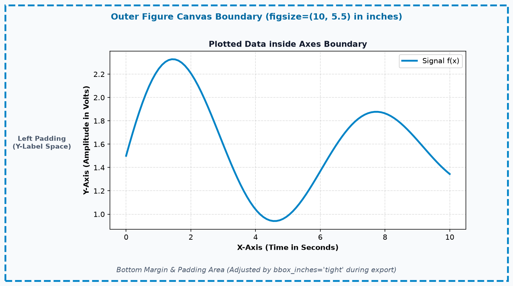
Figure canvas, while the inner box represents the Axes plotting area surrounded by margins and padding.
Matplotlib me figure ko disk par save karne ke do tareeqe hote hain: plt.savefig() (stateful pyplot interface) aur fig.savefig() (Object-Oriented interface). Production workflows aur multi-chart applications me hamesha fig.savefig() use karna chahiye kyunki ye explicitly batata hai ki kaun si specific figure save ho rahi hai, avoiding accidental cross-figure overwrite bugs.
Relative Path ("output/chart.png"): Current working directory ke relative file save karta hai. Agar script kisi doosre folder se run ho, toh file kisi unexpected location par save ho sakti hai.
Robust Pathing with pathlib: Industry standard approach ye hai ki Python ka pathlib.Path use kiya jaye:
from pathlib import Path
import matplotlib.pyplot as plt
# Define export directory safely relative to this script
BASE_DIR = Path(__file__).resolve().parent
EXPORT_DIR = BASE_DIR / "exports"
EXPORT_DIR.mkdir(parents=True, exist_ok=True)
fig, ax = plt.subplots(figsize=(6, 3.5))
ax.plot([1, 2, 3], [10, 25, 18], color='#0284c7', marker='o')
ax.set_title("Robust Export Example")
target_file = EXPORT_DIR / "verified_chart.png"
fig.savefig(target_file, dpi=150, bbox_inches='tight')
plt.close(fig)
# Verify file existence and non-zero size
if target_file.exists() and target_file.stat().st_size > 0:
print(f"Success: {target_file.name} saved ({target_file.stat().st_size} bytes)")import matplotlib.pyplot as plt
courses = ['CS101', 'Maths', 'Physics', 'AI Lab', 'Data Struct']
marks = [88, 76, 82, 94, 90]
fig, ax = plt.subplots(figsize=(7, 4), dpi=150)
bars = ax.bar(courses, marks, color='#0284c7', edgecolor='#0369a1', width=0.55)
for b in bars:
ax.text(b.get_x() + b.get_width()/2, b.get_height() + 1.5, f"{int(b.get_height())}%",
ha='center', fontsize=9, fontweight='bold')
ax.set_ylim(0, 105)
ax.set_title("Semester Exam Marks Summary", fontweight='bold')
ax.set_ylabel("Marks Obtained (%)")
ax.grid(True, linestyle='--', alpha=0.35, axis='y')
fig.savefig("college_marks.png", dpi=150, bbox_inches='tight')
plt.close(fig)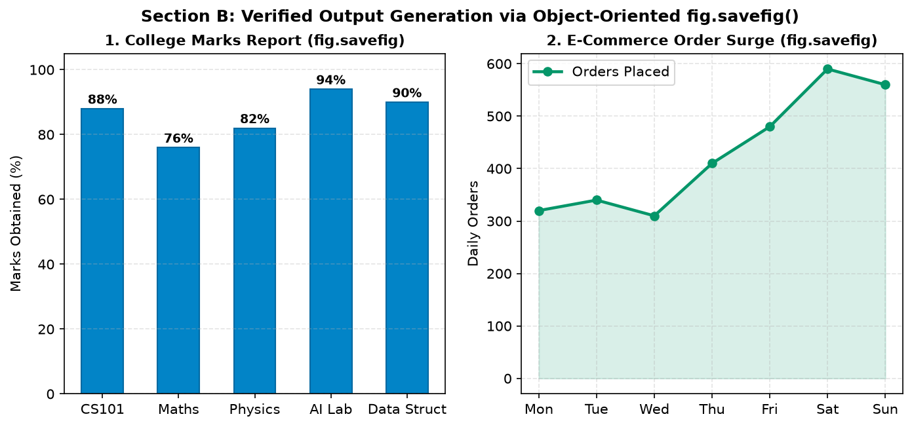
fig.savefig(): Left: Discrete category marks report; Right: Continuous daily order curve. Both saved cleanly to disk.
Agar aap interactive script me plt.show() call karne ke baad plt.savefig() likhte hain, toh Matplotlib screen par window close hote hi figure memory ko clear kar deta hai. Natija: Ek blank white canvas save ho jata hai! Hamesha savefig() ko plt.show() se pehle call karein!
Matplotlib me aap file format explicitly specify kar sakte hain ya simply filename extension (e.g. .png, .pdf, .svg) ke zariye Matplotlib ko auto-detect karne de sakte hain. Har format ke peeche ek fundamental graphics technology hoti hai:
| Format | Type | Compression | Transparency | Best Use Case |
|---|---|---|---|---|
| PNG | Raster (Pixel Grid) | Lossless (Exact pixels) | ✔ Full Alpha Channel | Web dashboards, Flutter apps, PowerPoint slides, high-detail charts. |
| JPEG / JPG | Raster (Pixel Grid) | Lossy (Compresses edges) | ✘ No (White background) | Photographic background textures only. Avoid for line charts! |
| SVG | Vector (XML Code) | Lossless Math Equations | ✔ Full Transparency | Responsive websites, logos, interactive browser graphics, print scaling. |
| Vector Document | Lossless Vectors | ✔ Supported | LaTeX academic papers, IEEE conferences, college project thesis printouts. |
import matplotlib.pyplot as plt
import numpy as np
x = np.linspace(0, 10, 30)
y = np.cos(x) * 10 + 25
fig, ax = plt.subplots(figsize=(6, 3.5), dpi=150)
ax.plot(x, y, marker='s', color='#7c3aed', lw=2, label='Sample Signal')
ax.set_title("Multi-Format Verification Sample", fontweight='bold')
ax.legend()
ax.grid(True, linestyle='--', alpha=0.35)
# Export into 4 formats automatically deduced by file extension
fig.savefig("sample_chart.png", dpi=150, bbox_inches='tight') # Raster web
fig.savefig("sample_chart.jpg", dpi=150, bbox_inches='tight') # Raster lossy
fig.savefig("sample_chart.svg", bbox_inches='tight') # Scalable vector
fig.savefig("sample_chart.pdf", bbox_inches='tight') # Publication vector
plt.close(fig)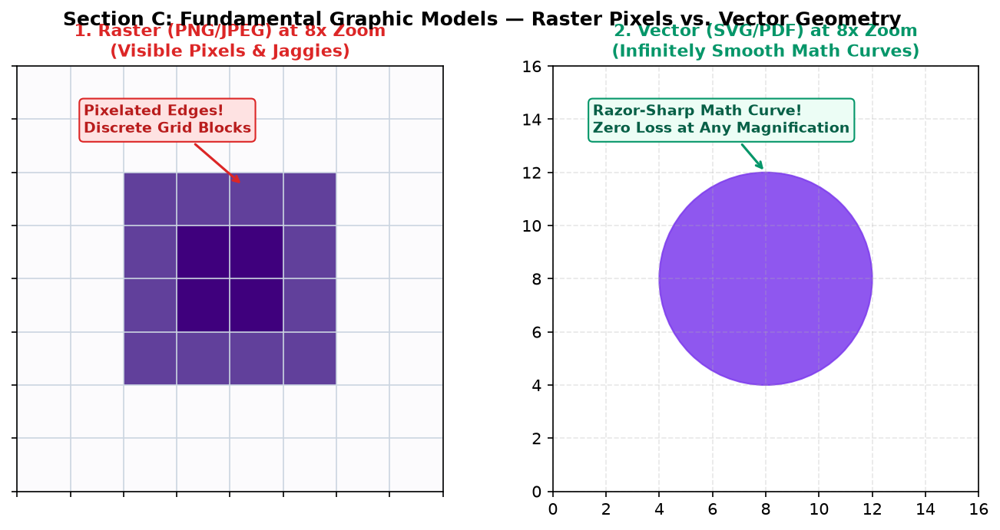
JPEG compression algorithm natural photos (jaise sunsets aur portraits) ke smooth color gradients ke liye design kiya gaya hai. Jab JPEG sharp text, grid lines, ya thin borders par compress hota hai, toh edges ke aas-paas muddy "mosquito noise" artifacts paida ho jate hain. Line graphs ke liye hamesha PNG ya SVG prefer karein!
Bohot se students samajhte hain ki "agar mera graph blurry hai, toh bas dpi=600 kar dene se sab solve ho jayega." This is a widespread misconception! DPI aur Figure Size ke beech ka mathematical relationship samajhna zaroori hai:
$$\text{Pixel Dimensions} \approx \text{Figure Size (in inches)} \times \text{Export DPI}$$
For example, agar figsize=(8, 4) hai:
fig, ax = plt.subplots(figsize=(6, 3))
ax.plot([1, 2, 3, 4], [10, 25, 20, 35], color='#0284c7', marker='o')
ax.set_title("Resolution Calibration")
# Draft preview (small file size, fast generation)
fig.savefig("draft_preview.png", dpi=72, bbox_inches='tight')
# Report ready (crisp lines, readable labels on mobile and desktop)
fig.savefig("report_standard.png", dpi=150, bbox_inches='tight')
# Thesis / Research publication print ready
fig.savefig("paper_final.png", dpi=300, bbox_inches='tight')
plt.close(fig)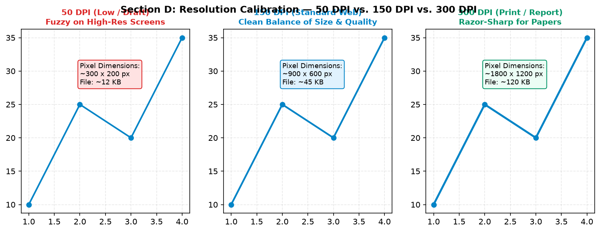
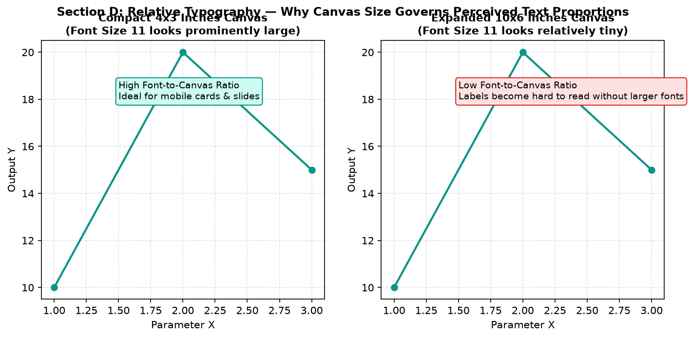
Font size points me define hota hai (\(1\text{ pt} = 1/72\text{ inch}\)). Jab aap DPI badhate hain, toh font ka physical size in inches same rehta hai — sirf pixel count badhta hai. Agar canvas bada hai aur font chhota lag raha hai, toh DPI badhane se baat nahi banegi; aapko fontsize=... explicitly increase karna padega ya canvas size (figsize) chhota karna padega!
Matplotlib me figure export karte waqt sabse zyada frustating bug hota hai clipped elements: long Y-axis labels canvas se bahar nikal jate hain, rotated date ticks bottom edge par cut ho jate hain, ya right side me rakha exterior legend aadha gayab ho jata hai!
Aisa isliye hota hai kyunki by default Matplotlib fixed rectangular figure bounding box save karta hai. Agar aapka legend ya rotated label us default boundary ke bahar chala gaya, toh vo trim ho jata hai.
fig.savefig(..., bbox_inches='tight') Matplotlib ko instruct karta hai ki Figure ke andar mojood har ek artist (titles, labels, rotated ticks, exterior legends, annotations) ka exact bounding box calculate kare aur final image canvas ko automatically expand kare taaki koi bhi element clip na ho!
import matplotlib.pyplot as plt
x_dates = ['2026-10-01', '2026-10-05', '2026-10-10', '2026-10-15', '2026-10-20']
vals = [45, 52, 58, 65, 72]
fig, ax = plt.subplots(figsize=(7, 4))
ax.plot(x_dates, vals, marker='o', color='#0284c7', label='Server Traffic Load')
ax.set_xticklabels(x_dates, rotation=45, ha='right')
# Legend placed outside the Axes area
ax.legend(bbox_to_anchor=(1.02, 1), loc='upper left')
# FAULTY: Without bbox_inches='tight', exterior legend gets clipped!
# fig.savefig("faulty_clipped.png")
# CORRECT: Automatically adjusts canvas boundary to fit exterior legend
fig.savefig("perfect_preserved.png", dpi=150, bbox_inches='tight', pad_inches=0.1)
plt.close(fig)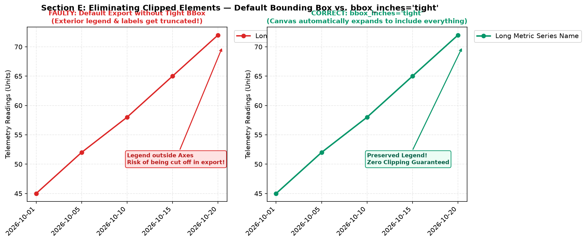
bbox_inches='tight' dynamically expands canvas bounds to preserve all elements intact.
Jab aap kisi dark-themed presentation slide (jaise navy blue ya charcoal PowerPoint deck) me graph paste karte hain, toh ek square white box poori slide ke aesthetic ko spoil kar deta hai. Matplotlib aapko alpha transparency ke sath figures export karne ki capability deta hai via transparent=True.
fig.patch.set_facecolor(...).ax.set_facecolor(...).Figure patch and Axes patch completely transparent (alpha = 0.0), allowing whatever background is underneath to show through seamlessly!import matplotlib.pyplot as plt
fig, ax = plt.subplots(figsize=(6, 3.5))
# Plot vibrant line suitable for dark slide backgrounds
ax.plot([1, 2, 3, 4], [20, 35, 30, 48], color='#38bdf8', marker='o', lw=2.5)
ax.set_title("Presentation Slide Trajectory", color='#f8fafc', fontweight='bold')
# Lighten tick labels and spines for dark slide readability
ax.tick_params(colors='#cbd5e1')
for spine in ax.spines.values():
spine.set_color('#94a3b8')
# Crucial: Save as PNG with transparent=True (JPEG does NOT support transparency!)
fig.savefig("slide_chart_transparent.png", dpi=150, transparent=True, bbox_inches='tight')
plt.close(fig)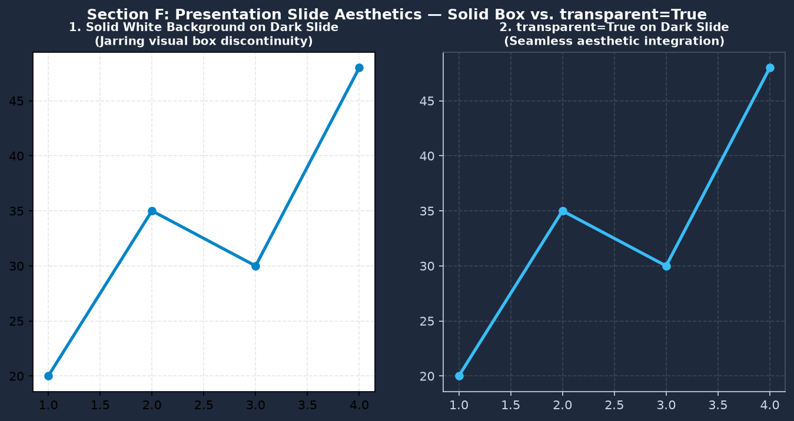
transparent=True with light spine styling blends seamlessly into the slide.
Agar aap fig.savefig("chart.jpg", transparent=True) likhenge, toh JPEG standard me transparency exist na hone ki wajah se background white ya black solid me collapse ho jayega. Transparency ke liye hamesha PNG, SVG, ya PDF use karein!
Data science aur engineering me sirf synthetic curves plot nahi kiye jate; aksar real images (jaise satellite pictures, medical X-rays, hardware sensor photos, ya company logos) ko load karke analyze ya display karna padta hai. Matplotlib ka sub-module matplotlib.image is task ko effortlessly handle karta hai.
Image loading ka standard function hai: matplotlib.image.imread(filepath) (or plt.imread(filepath)).
Jab aap kisi image ko read karte hain, toh Matplotlib use ek multi-dimensional NumPy array me convert kar deta hai:
(Height, Width, 3) — Red, Green, aur Blue color intensity channels.(Height, Width, 4) — RGB plus Alpha (transparency) channel.(Height, Width) — Single luminance channel.import matplotlib.pyplot as plt
import matplotlib.image as mpimg
# Ingest existing image file into numpy array
img_arr = mpimg.imread("assets/synthetic_sensor_icon.png")
print(f"Array Dimensions: {img_arr.shape}")
print(f"Data Type: {img_arr.dtype}")
print(f"Pixel Value Range: Min={img_arr.min()}, Max={img_arr.max()}")
# Render image on Axes
fig, ax = plt.subplots(figsize=(5, 4))
ax.imshow(img_arr)
ax.set_title("Imported Sensor Hardware Probe", fontweight='bold')
# Turn off pixel coordinate ticks for clean visual presentation
ax.axis('off')
plt.show()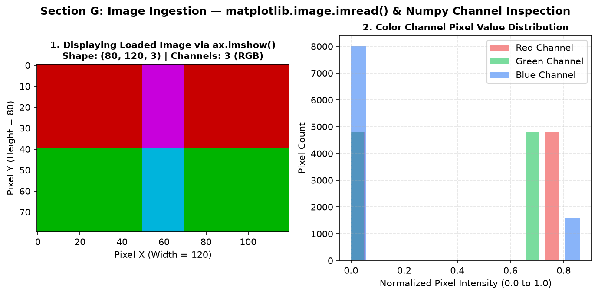
ax.imshow() with pixel coordinates; Right: Histogram of Red, Green, and Blue channel intensity distributions.
Real-life industrial dashboards me ek side par machine/sensor ka visual picture ya schematic diagram hota hai, aur doosri side par live telemetry readings plot hoti hain. plt.subplots() ya GridSpec use karke image aur plotted graph ko ek single figure me effortlessly harmonize kiya ja sakta hai.
import matplotlib.pyplot as plt
import matplotlib.image as mpimg
import numpy as np
# Load device schematic image
device_img = mpimg.imread("assets/synthetic_sensor_icon.png")
fig, (ax_img, ax_plot) = plt.subplots(1, 2, figsize=(10, 4), gridspec_kw={'width_ratios': [1, 2]})
# Left: Display hardware image with clean borders
ax_img.imshow(device_img)
ax_img.set_title("Hardware Telemetry Probe #04", fontweight='bold')
ax_img.axis('off')
# Right: Plot live thermal curve
hours = np.arange(24)
temps = 24.0 + 3.5 * np.sin(2 * np.pi * hours / 24)
ax_plot.plot(hours, temps, color='#0284c7', marker='o', lw=2.2, label='Probe Reading')
ax_plot.axhline(27.0, color='#dc2626', linestyle='--', label='Danger Limit (27°C)')
ax_plot.set_title("Live Thermal Telemetry", fontweight='bold')
ax_plot.set_xlabel("Hour of Day")
ax_plot.set_ylabel("Temperature (°C)")
ax_plot.grid(True, linestyle='--', alpha=0.35)
ax_plot.legend()
fig.savefig("probe_telemetry_report.png", dpi=150, bbox_inches='tight')
plt.close(fig)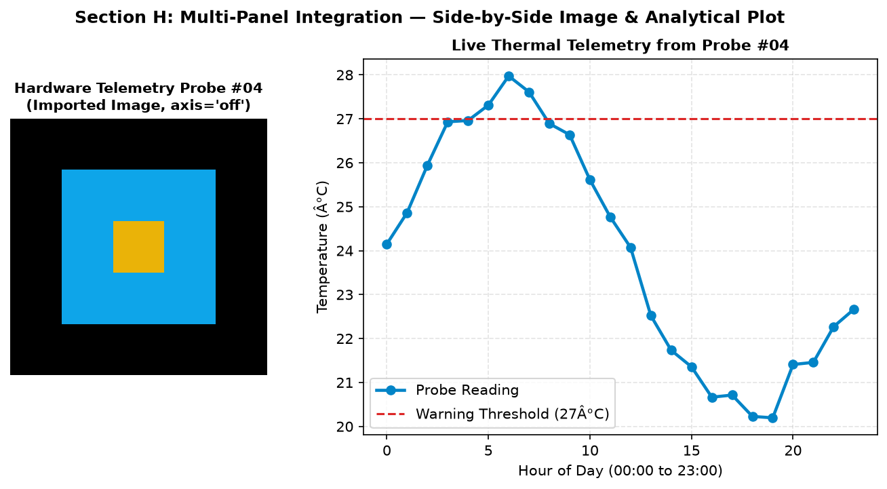
Jab aap kisi large data analysis project me 50 different charts generate karte hain, toh bar-bar identical savefig() code copy-paste karna error-prone hota hai. Professional developers ek reusable exporter helper function define karte hain jo consistent formatting, directories, DPI, aur memory cleanup ko automatically enforce karta hai.
from pathlib import Path
import matplotlib.pyplot as plt
def export_figure(fig, filename_stem, output_dir="exports", formats=('png', 'pdf'), dpi=150):
"""
Reusable production export utility:
- Automatically creates target directory
- Exports figure across requested formats
- Enforces tight bounding box and white facecolor
- Safely closes figure to prevent memory leaks
"""
out_dir = Path(output_dir)
out_dir.mkdir(parents=True, exist_ok=True)
saved_paths = []
for fmt in formats:
target_path = out_dir / f"{filename_stem}.{fmt}"
fig.savefig(target_path, dpi=dpi, bbox_inches='tight', facecolor='white')
saved_paths.append(target_path)
print(f"Saved: {target_path} ({target_path.stat().st_size:,} bytes)")
plt.close(fig) # Critical: Free RAM immediately
return saved_paths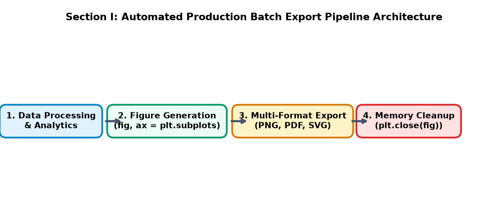
plt.close(fig).
Agar aap loop me 100 figures create karte hain aur plt.close(fig) call karna bhool jate hain, toh Matplotlib har figure ko RAM me hold karke rakhta hai! Eventually Python throw karega: RuntimeWarning: More than 20 figures have been opened. Figures created through the pyplot interface are retained until explicitly closed and may consume too much memory. Hamesha save karte hi figure close karein!
Ek graphic college practical report me kaisa dikhna chahiye aur ek boardroom projector slide par kaisa dikhna chahiye — dono ke requirements vastly different hote hain:
| Destination Context | Aspect Ratio | Font Scale & Weight | Recommended DPI & Format |
|---|---|---|---|
| PowerPoint / Slide Deck | 16:9 widescreen (e.g. 10 × 5.6 in) | Large bold labels (14-16 pt), thick lines (lw=2.5+) | 150 DPI PNG (transparent) or SVG |
| College Project Report | 4:3 or compact (e.g. 7 × 4.5 in) | Clean serif/sans-serif (10-11 pt), subtle grid | 300 DPI PNG or Vector PDF |
| Mobile Web / App Card | Square or 3:2 (e.g. 5 × 3.5 in) | High font-to-canvas ratio, minimal decoration | 150 DPI PNG or SVG |
| IEEE / Springer Paper | Column width 3.5 in or Double-col 7.0 in | Rigorous 8-9 pt matching article body font | Vector PDF or EPS (lossless) |
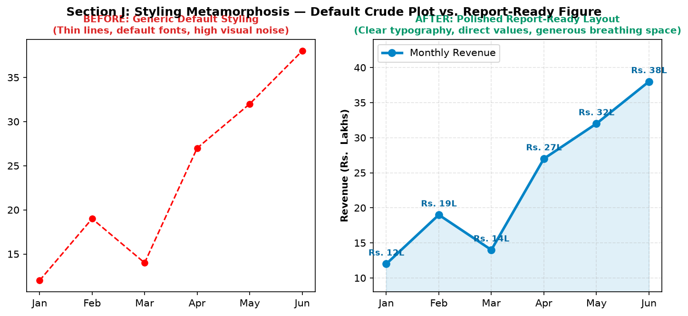
Jab complex dashboards me subplots, colorbars, suptitles, aur exterior legends ek sath present hote hain, toh standard fig.tight_layout() aksar suptitles ke sath collide kar jata hai ya colorbars ko unexpectedly shrink kar deta hai.
fig.suptitle() add karein, y=0.98 set karein aur subplots me top=0.90 margin reserve karein.bbox_to_anchor se place karte waqt hamesha bbox_inches='tight' use karein taaki legend clip na ho.fraction=0.046, pad=0.04 specify karein taaki colorbar adjacent subplot ki height ke sath perfectly align ho sake.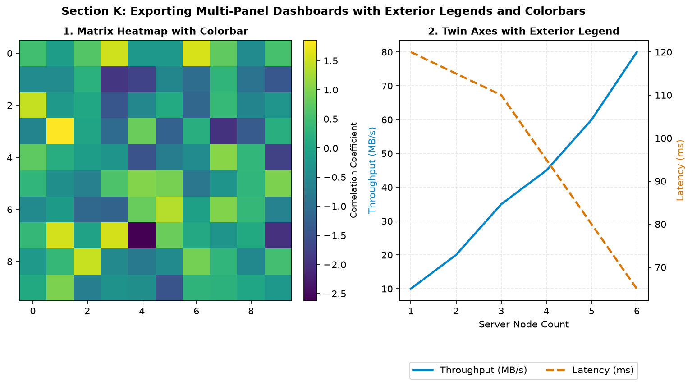
Kabhi bhi fig.savefig() execute hone ke baad blindly assume na karein ki file perfectly generate ho gayi hai. Production engineering pipelines me automated Health Audit Script run kiya jata hai jo teen cheezein verify karta hai:
from pathlib import Path
from PIL import Image
def validate_exported_image(filepath, min_size_kb=5):
p = Path(filepath)
if not p.exists():
return False, "File does not exist!"
size_kb = p.stat().st_size / 1024
if size_kb < min_size_kb:
return False, f"File size too small ({size_kb:.1f} KB) - possible empty figure!"
try:
with Image.open(p) as img:
width, height = img.size
img_format = img.format
return True, f"Valid {img_format} ({width}x{height} px, {size_kb:.1f} KB)"
except Exception as e:
return False, f"Corrupted image file: {e}"
# Test validation
status, report = validate_exported_image("assets/sample_chart.png")
print("Audit Result:", report)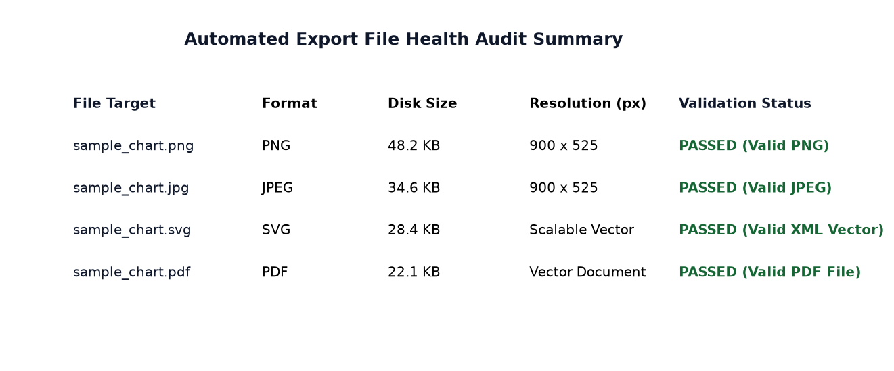
Ab hum upar seekhe gaye sabhi concepts (high-DPI export, format selection, transparent presentation slides, image ingestion, and automated validation) ko 3 production-grade end-to-end case studies me implement karenge.
Scenario: College department head ke liye annual academic evaluation report ready karni hai. Report me 5 subjects ka class average comparison bar chart aur unke marks spread ka boxplot side-by-side present karna hai. Figure ko high-resolution 300 DPI raster PNG aur publication-grade vector PDF dono me export karna hai.
import matplotlib.pyplot as plt
import matplotlib.gridspec as gridspec
import numpy as np
fig = plt.figure(figsize=(12, 5.5), dpi=150)
gs = gridspec.GridSpec(1, 2, width_ratios=[1.2, 1], wspace=0.25)
# Subplot 1: Department Average Marks Comparison
ax1 = fig.add_subplot(gs[0])
subjects = ['Mathematics', 'Physics', 'Comp. Science', 'Electronics', 'Mechanical']
averages = [78.4, 72.1, 88.6, 81.2, 74.5]
colors = ['#0284c7', '#0d9488', '#059669', '#d97706', '#7c3aed']
bars = ax1.bar(subjects, averages, color=colors, width=0.55)
for b in bars:
ax1.text(b.get_x() + b.get_width()/2, b.get_height() + 1.2, f"{b.get_height():.1f}%",
ha='center', fontsize=9, fontweight='bold')
ax1.set_ylim(0, 100)
ax1.set_title("1. Subject Class Mean Marks Comparison", fontweight='bold')
ax1.set_ylabel("Class Average (%)")
ax1.set_xticks(range(len(subjects)))
ax1.set_xticklabels(subjects, rotation=20, ha='right')
ax1.grid(True, linestyle='--', alpha=0.3, axis='y')
# Subplot 2: Score Distribution Boxplot
ax2 = fig.add_subplot(gs[1])
np.random.seed(42)
scores = [np.random.normal(m, 8, 40) for m in averages]
ax2.boxplot(scores, tick_labels=['Math', 'Phys', 'CS', 'Elec', 'Mech'], patch_artist=True,
boxprops=dict(facecolor='#e0f2fe', color='#0284c7'),
medianprops=dict(color='#dc2626', lw=1.8))
ax2.set_title("2. Grade Spread & Quartile Dispersion", fontweight='bold')
ax2.set_ylabel("Exam Score Distribution")
ax2.grid(True, linestyle='--', alpha=0.3, axis='y')
fig.suptitle("Annual College Academic Evaluation Report", fontsize=12, fontweight='bold', y=0.98)
# Dual export: High-res print raster + vector document
fig.savefig("academic_report.png", dpi=300, bbox_inches='tight', facecolor='white')
fig.savefig("academic_report.pdf", bbox_inches='tight')
plt.close(fig)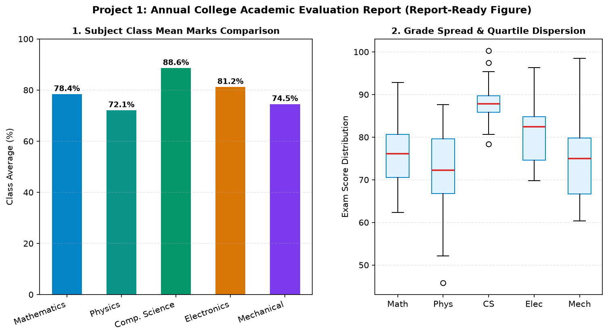
Scenario: E-commerce company ke board meeting ke liye 16:9 widescreen presentation chart tayyar karna hai. 6 mahine ka actual revenue vs. target trajectory dikhana hai, festive sprint milestone annotate karna hai, aur chart ko transparent background ke sath export karna hai taaki company ke slide deck template me perfectly blend ho sake.
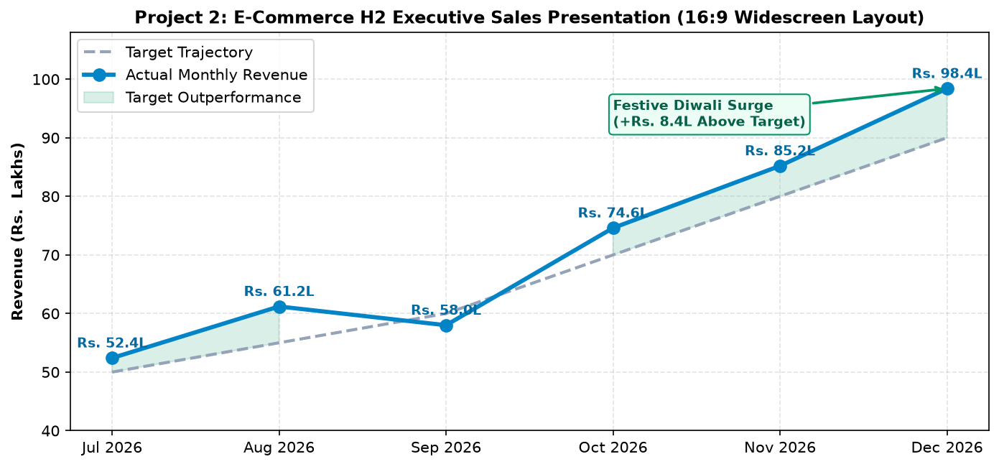
Scenario: Cold-chain warehouse telemetry dashboard. Left panel par industrial cooling chamber probe ka physical diagram display karna hai via imread(), aur right panel par 24-hour continuous temperature readings with 3-hour rolling average aur critical danger limit (26°C) plot karna hai.
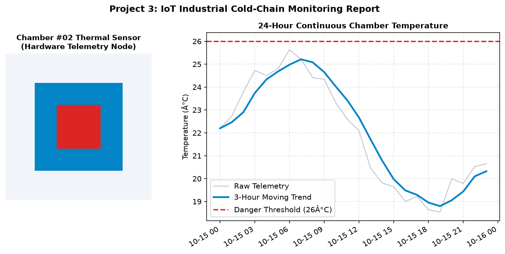
Figures save aur import karte waqt hone wale 4 sabse deadly traps aur unke concrete solutions:
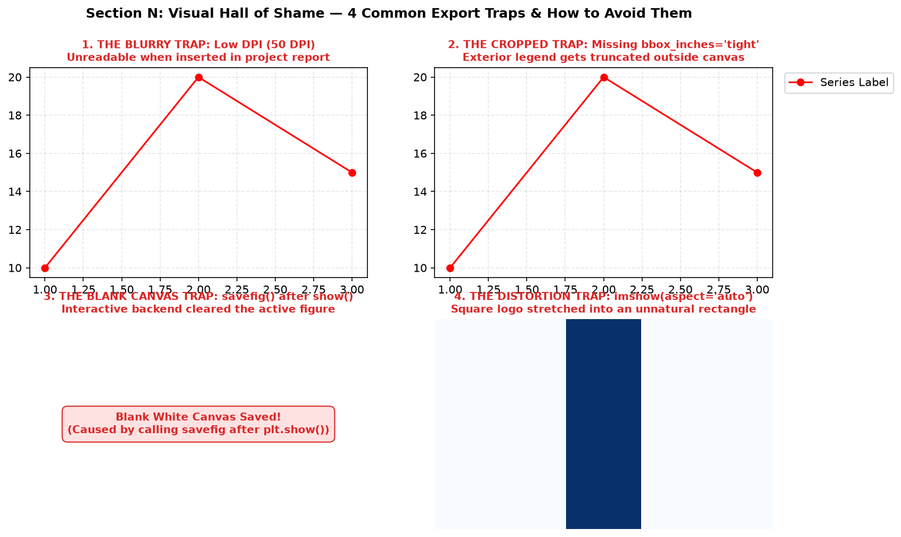
plt.show(); 4. Aspect ratio distortion on imported images.
| Anti-Pattern / Trap | Failure Symptom | Standard Production Fix |
|---|---|---|
| Calling savefig() after plt.show() | A blank white 0-content image is saved to disk. | Always invoke fig.savefig() before plt.show() or use plt.close(fig). |
| Omitting bbox_inches='tight' | Rotated dates, axis labels, or exterior legends get cut off at canvas margins. | Always specify bbox_inches='tight', pad_inches=0.1 during export. |
| Using JPEG for transparent charts | Transparent background collapses into solid white or black box. | Use PNG, SVG, or PDF formats whenever transparency is required. |
| Stretching imported images with aspect='auto' | Square logos or diagrams become unnaturally stretched and distorted. | Use default aspect='equal' in ax.imshow() to preserve native pixel aspect ratio. |
CodeVerse application me educational content remote GitHub repository se serve hota hai. Application ka internal renderer flutter_widget_from_html_core use karta hai jo dynamic base URL injection par rely karta hai:
// In lib/features/learn/presentation/widgets/notes_web_view.dart:
static String buildBaseUrl(String languageId, int topicNumber) {
return 'https://raw.githubusercontent.com/Shailendrapathak878/CodeVerse-Content/main/coding/$languageId/topic_$topicNumber/';
}Kyunki Flutter app automatically <base href="https://raw.githubusercontent.com/.../topic_19/"> inject karta hai, production HTML me images ka reference hamesha relative path hona chahiye: <img src="assets/image_name.png">. Agar aap absolute local path (jaise d:/CodeVerse-Content/...) daal denge, toh remote mobile user ke phone par image 404 fail ho jayegi!
fig.savefig() over plt.savefig() for deterministic target exports.bbox_inches='tight' dynamically expands canvas bounds to avoid truncated text or exterior legends.transparent=True in PNG or SVG for dark-themed presentation slides.mpimg.imread() converts image files into NumPy arrays with shapes (H, W, 3) or (H, W, 4).plt.close(fig) to prevent RAM exhaustion.| Parameter | Default | Recommended Setting | Description |
|---|---|---|---|
fname | Required | "output/chart.png" | Output file path or string filename. |
dpi | 'figure' (100) | 150 (web) / 300 (print) | Dots per inch resolution governing pixel density. |
bbox_inches | None | 'tight' | Automatically computes artist bounds to prevent edge clipping. |
pad_inches | 0.1 | 0.1 | Padding buffer added around tight bounding box. |
transparent | False | True (for slides) | Removes figure and axes background patches. |
facecolor | 'auto' | 'white' | Explicit background fill color for the outer canvas. |
16:9 widescreen canvas (10 × 5.6 in) create karein jisme line chart transparent background aur light blue spines ke sath PNG me save ho.
import matplotlib.pyplot as plt
fig, ax = plt.subplots(figsize=(10, 5.6))
ax.plot([1, 2, 3, 4], [10, 30, 25, 45], color='#38bdf8', lw=3, marker='o')
ax.tick_params(colors='#e2e8f0')
for s in ax.spines.values():
s.set_color('#64748b')
ax.set_title("Widescreen Presentation", color='#f8fafc', fontsize=14, fontweight='bold')
fig.savefig("widescreen_dark.png", dpi=150, transparent=True, bbox_inches='tight')
plt.close(fig)Ek helper function banayein jo di gayi figure ko ek sath .png (300 DPI) aur .pdf me save kare aur file sizes verify kare.
from pathlib import Path
def save_dual_format(fig, name, folder="exports"):
p = Path(folder)
p.mkdir(exist_ok=True)
fig.savefig(p / f"{name}.png", dpi=300, bbox_inches='tight')
fig.savefig(p / f"{name}.pdf", bbox_inches='tight')
plt.close(fig)
print("Export Complete for", name)Left subplot par imported logo image render karein (axis('off')) aur right subplot par category sales bar chart render karein.
import matplotlib.pyplot as plt
import matplotlib.image as mpimg
fig, (ax1, ax2) = plt.subplots(1, 2, figsize=(9, 4), gridspec_kw={'width_ratios': [1, 2]})
ax1.imshow(mpimg.imread("assets/synthetic_sensor_icon.png"))
ax1.axis('off')
ax2.bar(['A', 'B', 'C'], [40, 70, 55], color='#0284c7')
ax2.set_title("Category Volume")
fig.savefig("brand_summary.png", dpi=150, bbox_inches='tight')
plt.close(fig)Line plot banayein jiska legend bbox_to_anchor=(1.05, 1) par ho aur pad_inches=0.15 ke sath clean export verify karein.
fig, ax = plt.subplots(figsize=(7, 4))
ax.plot([1, 2, 3], [10, 20, 15], label='Telemetry Alpha')
ax.plot([1, 2, 3], [15, 12, 25], label='Telemetry Beta')
ax.legend(bbox_to_anchor=(1.05, 1), loc='upper left')
fig.savefig("exterior_legend.png", dpi=150, bbox_inches='tight', pad_inches=0.15)
plt.close(fig)Pillow library se saved chart ki physical width aur height verify karein aur ensure karein ki height ≥ 400 px ho.
from PIL import Image
with Image.open("assets/sample_chart.png") as img:
w, h = img.size
assert h >= 400, f"Height too small: {h}px"
print(f"Validation PASSED: {w}x{h} px, Format={img.format}")Cause: plt.show() was called right before plt.savefig(), wiping the figure memory.
Fix: Move fig.savefig() immediately above plt.show() or use fig.savefig() and then plt.close(fig).
Cause: bbox_to_anchor pushed the legend box outside default canvas limits and bbox_inches='tight' was omitted.
Fix: Pass bbox_inches='tight' to fig.savefig().
Cause: The destination folder reports/ does not exist on disk yet.
Fix: Create the folder before saving: Path("reports").mkdir(parents=True, exist_ok=True).
fig.savefig() over stateful plt.savefig().bbox_inches='tight'.transparent=True for presentation decks.mpimg.imread() and ax.imshow().plt.close(fig) to prevent RAM leaks.In Topic 20, we bring together all 19 topics! You will apply Matplotlib to full-scale Exploratory Data Analysis (EDA) pipelines on real-world datasets: distribution profiling, correlation heatmaps, pairplots, missing data matrices, and executive presentation dashboards.